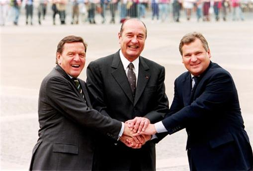

Mon engagement en faveur des relations franco-allemandes n’est plus à faire. Depuis de nombreuses années, j’avais dans l’idée de créer une entité spécifique, une sorte de courroie de transmission qui permettrait d’associer, la société civile, les entreprises, les institutions, mais également tous les autres acteurs du monde franco-allemand dans le grand débat que représente la construction européenne.
L’ORFACE apporte ainsi depuis douze ans sa modeste contribution aux relations bilatérales. Officialisé à l’occasion du 40ème anniversaire du traité de l’Elysée, l'Observatoire a su très vite trouver une voie originale dans le courant de la coopération et des échanges qui ont depuis cinquante ans soudé l'amitié entre nos deux peuples. Il encourage bon nombre d'initiatives citoyennes dont le Prix franco-allemand au sein de l’Académie des sciences morales et politiques, le projet d’un Institut d’études supérieures, etc.
Le prix franco-allemand a mis en lumière des travaux ainsi que des initiatives situées à tous les niveaux de la société. Célèbres ou humbles artisans de la réconciliation, puis de la coopération, individus ou groupements, la variété des exemples cités dans ce mémorial (dont nous publions ici le palmarès à l'occasion du 50ème anniversaire du Traité) constitue une palette aux mille reflets de la société civile, de ses aspects les plus généreux, ceux que la société médiatique se devrait de mieux faire connaître.
Ce mémorial est un indicateur des relations bilatérales, un témoignage de ce travail de base, des initiatives différentes entreprises au quotidien par la société civile sans lequel l’amitié franco-allemande ne peut réussir. Nous devons impérativement relancer le processus de coopération franco-allemand dans tous les domaines, car si nous négligeons nos partenaires allemands nous ne pouvons que léser les intérêts de la construction européenne.
Les avertissements lancés à de nombreuses reprises par l’ORFACE en direction des politiques ont malheureusement trouvé un écho désastreux dans la crise économique au sein de la zone euro. Néanmoins cette crise devrait enfin permettre de relancer la coopération franco-allemande. Force est de constater que sans le couple franco-allemand, l’avenir de l’Europe ne peut se construire durablement. Il est essentiel que la nouvelle génération d’acteurs institutionnels franco-allemands prenne conscience du poids que représente l’ensemble de la société civile franco-allemande qui ne demande qu’à s’investir dans le grand dessein qu’est l’Europe.
En évoquant dans les pages qui suivent les activités multiples et variées de l’ORFACE, il ne saurait être question d’égrener ici, en un chapelet exagérément long et fastidieux, la liste complète de tous les faits et gestes exécutés par l’ORFACE. Les exemples qui suivent auront à charge d’illustrer plus particulièrement les actions initiées durant douze ans.
Nous nous devons avec humilité de rappeler que nos actions s’inscrivent dans cette démarche du Général de Gaulle et du chancelier Adenauer, de Kohl-Mitterrand, de Schröder-Chirac et qui se prolonge dernièrement dans un plus large mouvement par le projet Agenda 2020 présenté en 2010, et les actions que mettront en œuvre le Président François Hollande et la Chancelière Angela Merkel.
Leur ambition était de créer une association franco-allemande spécifique. Une sorte de courroie de transmission qui permettrait d’associer la société civile dans son ensemble, mais également les entreprises et les institutions, afin de rassembler solidairement acteurs connus et anonymes du monde franco-allemand dans le grand débat que représente la construction européenne dans l’esprit du Traité de l’Elysée.
Extraits des statuts
« …L’Association a pour objet d’encourager, regrouper et soutenir toutes les initiatives de la coopération franco-allemande en faveur de la construction européenne. Son action se portera tant vers la société civile que vers les institutions de part et d’autre du Rhin.
Elle encourage les sentiments d’appartenance à la communauté internationale, la tolérance dans tous les domaines de la civilisation et l’idée de l’entente entre les peuples.
Ainsi elle se consacre en outre à l’intégration européenne par les échanges d’idées entre la France et l’Allemagne et ce dans tous les domaines, conformément aux déclarations communes du Président de la République française, du Chancelier de la République Fédérale d’Allemagne et des deux Parlements français et allemands lors de la session extraordinaire du 22 janvier 2003.
Les moyens d’action de l’association peuvent être concrétisés par des partenariats avec des institutions, par des publications, par des articles, par l’organisation de conférences, par des séminaires, par des promotions de partenariats franco-allemands dans tous les domaines, par des manifestations diverses, par un bulletin et un site Internet, par des rencontres afin de faciliter les contacts entre régions françaises et Länder allemands….. »
L’ORFACE mène de nombreuses actions sur le terrain pour développer les relations franco-allemandes à travers ses contacts avec les milieux politiques, économiques et culturels outre-rhin. Grâce aux relations personnelles qu’il entretient avec de nombreuses personnalités allemandes, par sa participation à des manifestations d’amitié franco-allemandes, par sa présence active sur le terrain, l’ORFACE est un acteur reconnu au sein de la communauté franco-allemande.
L’ORFACE apporte son soutien actif à toutes les associations franco-allemandes qui travaillent au renforcement quotidien des liens entre nos deux pays. L’objectif est clair : il s’agit de renforcer la connaissance mutuelle de l’autre. Il cherche à satisfaire de la façon la plus exhaustive possible, à l’aide d’ouvrages de grande qualité, les attentes des passionnés des rapports franco-allemands.
L’ORFACE intensifie son action dans des domaines où il est déjà engagé en liaison avec les associations de coopération franco-allemandes intervenant à ses côtés. A savoir développer un travail de réflexion, d’analyse et de synthèse sur les grandes questions de société intéressant les deux pays.
L’ORFACE qui souhaite toucher un public de plus en plus large, ne se limite pas à l’utilisation des médias traditionnels pour diffuser son message. Il anime son site afin de pouvoir répondre au plus grand nombre d’attentes et a mis en place le « Cercle des Hautes Études franco-allemandes pour l’Europe“; think thank indépendant qui s’est donné pour mission de perpétuer le dialogue des idées entre l’Allemagne et la France dans le partage de la langue et de la culture française. Le Cercle réunit des personnalités, issues de milieux sociaux, culturels et scientifiques différents, tous de grands connaisseurs de la coopération bilatérale.
L’ORFACE informe au mieux les principaux responsables de la coopération franco-allemande de façon à ce que l’on puisse orienter ses interventions dans les secteurs spécifiques, où son savoir-faire et son expérience seraient utiles.
C’est le champ d’intervention privilégié de l’Observatoire, qui s’investit très largement, à travers toutes les régions de France, en direction de la société civile franco-allemande, afin d’être à l’écoute de leurs projets et de leurs besoins et apporter son soutien. En 2003 l’association est officialisée en loi 1901 à l’occasion du 40ème anniversaire du traité de l’Elysée.
Le président de l’ORFACE
Joue un rôle essentiel : c’est lui qui donne l’impulsion, qui est en contact avec des personnalités des deux pays, qui intervient (soit par lettres soit par des visites directes) auprès des personnes concernées aptes à faire appliquer les décisions prises.
Son action est donc une mission très vaste qui nécessite à la fois une bonne perception des enjeux franco-allemands et une connaissance concrète de la coopération pour laquelle une structure souple, et facilement adaptable, a paru le soutien le plus approprié. En ce sens, et pour suffire à sa vocation, il lui faut être au plus près des réalités tangibles. Il est vrai que la coopération entre la France et l’Allemagne, dans l’esprit de ses fondateurs, est avant tout affaire des citoyens des deux pays, bien avant d’être celles des experts ou des analystes. C’est la raison pour laquelle il s’emploie à aller au contact direct des décideurs et, d’une manière générale, de tous ceux dont le savoir et l’engagement sont susceptibles d’aider à la réalisation d’objectifs définis par le Traité.
Une coopération fondée sur l’amitié entre deux peuples, ainsi qu’il est ambitionné pour les liens privilégiés qui doivent unir la France à l’Allemagne, ne se divisant pas, le président de l’ORFACE a par voie de conséquence été appelé à agir dans pratiquement tous les domaines relatifs à l’organisation du corps social. Ceci explique la multiplicité et la diversité de ses interventions lesquelles ne sont en rien une dispersion de l’effort, mais une réponse réfléchie aux obligations qu’impose la mission attachée à l’ORFACE.
Pareillement, le président est amené à effectuer des déplacements fréquents en France et hors de France. Il participe à un très grand nombre de conférences, de colloques, de séminaires, de rencontres, de toutes sortes, de manifestations et de cérémonies ; non par goût excessif des apparitions publiques ou des mondanités ; mais dans le souci de marquer la présence de l’ORFACE. Ainsi, il fait connaître la richesse de la coopération franco-allemande, témoigne de ses succès et explique par le discours les perspectives qu’elle ouvre.
Pour lui, les milliers d’associations franco allemandes sont un potentiel de renouveau de la relation bilatérale, pour peu que leurs efforts soient mieux connus, et qu’ils soient démultipliés par les relais dont disposent les pouvoirs publics et les collectivités territoriales. Écouter, agir sur le terrain, dialoguer sont quelques exemples des actions menées pour mieux connaître le réseau en France et en Allemagne. Le président est toujours disponible et à l’écoute afin de relayer auprès des institutions, de part et d’autre du Rhin, les inquiétudes de la société civile.
Évolutions
Structure très légère l’ORFACE s’avère, au fil du temps, indispensable comme aiguillon et comme stimulateur des relations franco-allemandes. A la faveur de l’approfondissement des relations bilatérales l’ORFACE s’est épanouie et a développé des compétences nouvelles. L’année 2003 vit ainsi la naissance de nombreuses actions et permit de développer de nombreux et nouveaux contacts. Tout au long de ces douze dernières années, l’ORFACE a su rester vigilant, afin de conserver le dynamisme qui prévaut jusqu’aujourd’hui.
Changement de statut
La liberté d’association s’insère naturellement dans un ensemble qui est celui des libertés publiques et dont elle constitue un élément essentiel. Afin de s’assurer une totale autonomie de décision la présidence a décidé de continuer ses efforts pour poursuivre ses missions en faveur de l’amitié franco-allemande sans pour autant choisir de se déclarer selon les statuts réglementaires de la loi 1901. Conséquence directe sur notre fonctionnement, nous ne pouvons percevoir de subvention publique.
Évènementiel
Il serait fastidieux de dérouler une liste à la Prévert des nombreux évènements auxquels l’ORFACE a est invité à participer. Aussi, nous mettrons en lumière ceux qui couvrent le mieux les missions que nous nous sommes données. Toutes ces actions sont la preuve du dynamisme de l’ORFACE qui joue un rôle essentiel dans la promotion des relations multilatérales entre les institutions officielles, les managers, le système scolaire et la jeunesse et ce afin de perpétuer la vigueur des échanges franco-allemands.
Perspectives
 Sommet du triangle de Weimar à Nancy : le Chancelier, M. Gerhard Schroeder, le Président de la République, M. Jacques Chirac et le Président de la République de Pologne, M. Aleksander Kwasniewski
Dans cet esprit, l’ORFACE participe à l’ouverture vers l’Asie et les pays de l’Europe de l’Est comme membre du Centre de Coopération Franco Germano Chinois et du comité du Triangle de Weimar. En effet, les liens géographiques naturels de l’Allemagne avec ses voisins, en particulier avec la Pologne, sont indéniables de même que les liens d’amitiés historiques de la France et de l’Allemagne avec la Chine devraient être une source d’innovation, non seulement pour le bénéfice de chacun des deux pays, mais pour l’Europe toute entière.
En retour, on estime que les institutions politiques doivent encourager le volontariat franco-allemand car notre avenir européen, cette exception européenne qui se nourrit des diversités du continent, a pour premier cercle le dialogue entre les deux grandes nations continentales d’Europe.
Le réseau existe déjà, mais les mailles sont larges et le tissu humain peut être encore resserré entre les deux populations : parmi les quelques milliers de jumelages de communes, un bon tiers se limite à des rencontres entre élus sans qu’il y ait un véritable brassage de citoyens français et allemands.
En incluant les partenariats économiques et commerciaux près de quarante mille personnes œuvrent aujourd’hui directement au perfectionnement constant de la coopération bilatérale.
Les observateurs qui croient faire état d’un ralentissement de la relation franco-allemande ne font donc que décrire la surface des choses. Il peut y avoir des appréciations différentes entre partenaires, quelques grands dossiers européens l’ont montré ces derniers mois, et des compromis ont été finalement trouvés, mais s’il y a changement entre la France et l’Allemagne, il tient à la liberté du ton, à cette familiarité qui caractérise les collègues lorsqu’ils ont longtemps travaillé ensemble.
L’ORFACE ne vit que par la volonté de ceux qui croient en nos actions et veulent voir dans ses actions une utilité et un progrès pour la coopération franco-allemande en Europe.
Pour que l’ORFACE avance il faut à ses initiateurs beaucoup de ténacité, de constance, de foi en leurs objectifs, qu’ils soient moraux ou matériels, sans lesquels l’association ne serait qu’une utopie.
Partager cette page